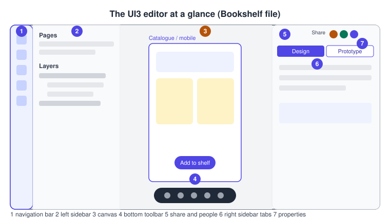
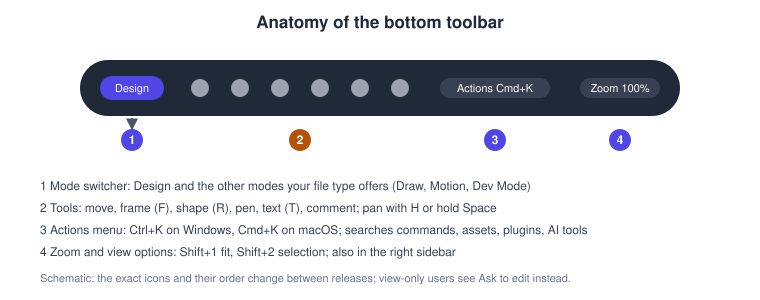
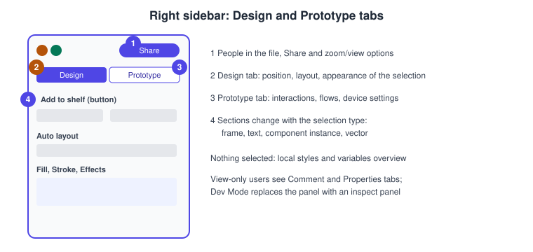
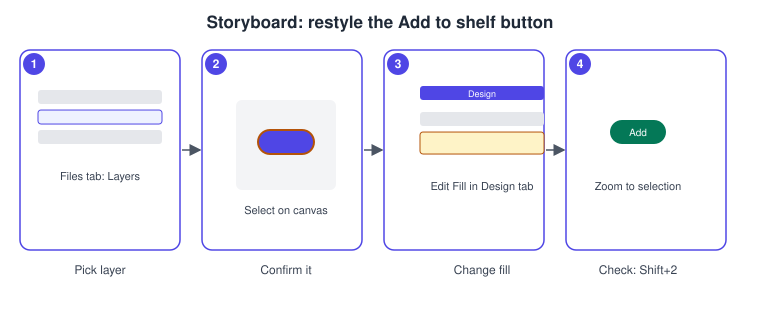

Interface Tour
|
This content was generated with the assistance of AI and should be verified against the official documentation before being relied on in production. |
This page was checked against the official Figma documentation on 2026-10-30 and describes the UI3 interface, which is the only interface of Figma Design since the old interface was retired on 2025-04-30. The product described is Figma Design in the browser or in the desktop app; the other products (FigJam, Slides, Make, Sites, Buzz) have their own, related layouts that are covered on their own pages. Opening, selecting and inspecting a file is possible with any seat, but the editing controls shown here need a Full seat (or a Collab seat where the product allows it, see Plans, Seats and AI Credits); a person with view access sees a reduced interface. Everything in this tour is generally available, with the exception of the modes that are announced as beta in the release notes; the bottom toolbar mode list changes over time, so treat the mode names below as a snapshot. Figma is a continuously deployed service and icons move between releases, which is why this page explains locations by name and shortcut, and why the drawings are schematic.
The running example is Bookshelf, a fictitious book-tracking app. The tour opens the Bookshelf Mobile file, finds the Catalogue screen, selects the "Add to shelf" button and restyles it, then adjusts the view for comfortable work.
The editor in one picture
UI3 arranges the editor in five zones: a narrow navigation bar at the far left, a left sidebar whose content depends on the selected navigation tab, the canvas in the middle, a floating toolbar at the bottom of the canvas, and a right sidebar. The right sidebar also carries the people currently in the file, sharing and view options.

-
The navigation bar switches what the left sidebar shows.
-
The left sidebar lists pages and layers, assets or tools according to the active tab.
-
The canvas holds frames; you pan and zoom it freely.
-
The bottom toolbar holds the tools, the mode switcher and the Actions menu.
-
The share button and the avatars of the other people in the file sit in the right sidebar.
-
The Design and Prototype tabs choose which properties the right sidebar edits.
-
The property sections change with the kind of layer selected.
The navigation bar and the left sidebar
The navigation bar is the far-left vertical strip. Its tabs, as documented on 2026-10-30, are the following.
| Tab | What the left sidebar shows | Shortcut |
|---|---|---|
Figma menu |
App commands, layer actions, creating files and preferences such as dark mode |
none documented |
Files |
The file’s pages, its layer tree, Find and replace and the file-level edit menu |
Option 1 (macOS), Alt 1 (Windows) |
Agents |
The chat history of the Figma agent and a button to start a new chat |
none documented |
Assets |
Local components and components from UI kits and libraries; the Libraries modal |
Option 2 (macOS), Alt 2 (Windows) |
Tools |
Plugins, widgets, shaders and Weave tools, with search and filters |
none documented |
Variables |
A view to create and edit variables, modes and collections |
none documented |
File notifications |
Library updates, missing fonts and the offline status, at the bottom of the bar |
none documented |
The Libraries modal has its own shortcut, Option 3 on macOS and Alt 3 on Windows. Labels under the tab icons are on by default and can be switched off from the View menu. The left navigation bar was redesigned on 2026-01-07 to the layout above, so older screenshots show a different set of tabs. People with only view access see just the Files tab.
The left sidebar changes with the active tab and its right edge can be dragged to change its width. In the Files tab the page list sits above the layer tree. Layers are listed in stacking order, with the topmost layer first, and nested layers are indented under their frame. Selecting a layer in the tree selects it on the canvas and the other way round.
Pages and layers
A file contains one or more pages, and a page contains the layers that you see on the canvas. The Bookshelf file uses one page per area (Catalogue, Book detail, Review form), which keeps each layer tree short. Pages are created, renamed, reordered and deleted from the page list. Layers can be renamed by double-clicking, hidden or locked from the layer row, and reordered by dragging.
The canvas
The canvas is an unbounded surface on which frames, sections and other layers are placed. To pan, hold the Space bar and drag, use the Hand tool (H), or slide two fingers on a trackpad. To zoom, hold Cmd (macOS) or Ctrl (Windows) and scroll, or pinch on a trackpad. The current zoom level is shown in the interface and can be typed into the zoom menu.
The canvas shows what other people are doing: their cursors move in real time, and their selections are outlined in their own colour. Multiplayer cursors can be switched on and off with Option Cmd \ on macOS and Ctrl Alt \ on Windows. A zoom or view change is personal; it never changes what other people see.
The bottom toolbar and the modes
The toolbar floats at the bottom of the canvas. It carries a mode switcher, the drawing tools, the Actions menu entry and the zoom and view control. A person with view-only access sees an Ask to edit control in its place. The modes available depend on the file and on the seat: Design is the default, and Draw, Motion and Dev Mode are the other working modes of a design file, each of which has its own page in this sub-section (see Figma Draw, Figma Motion and Dev Mode). Dev Mode needs a Dev or Full seat. Which modes a file shows on 2026-10-30 is a snapshot, because Motion was still described as an open beta.

The tool shortcuts documented in the layers table are listed below, with macOS first and Windows second where they differ.
| Tool or action | macOS | Windows |
|---|---|---|
Frame |
F |
F |
Text |
T |
T |
Shape |
R |
R |
Section |
Shift S |
Shift S |
Auto layout |
Shift A |
Shift A |
Group |
Cmd G |
Ctrl G |
Component |
Option Cmd K |
Ctrl Alt K |
Hand tool (pan) |
H |
H |
The Actions menu
The Actions menu is the search-and-command palette. It opens from its toolbar icon or with Cmd K (macOS) or Ctrl K (Windows). From it you can reach Figma AI tools, common productivity actions, asset search, and plugins and widgets. It also holds view actions, including Show or hide UI. When you do not remember where a command lives, typing its name in the Actions menu is faster than looking through menus; the shortcuts themselves are collected on Navigation, Shortcuts and Actions.
The right sidebar
The right sidebar changes with the situation.
-
With nothing selected it shows the file-level resources, such as local styles.
-
With a layer selected and edit access it offers two tabs. Design edits the properties of the layer (position, layout, appearance, fill, stroke, effects, and the sections specific to the layer type). Prototype edits interactions, flows and the prototype settings.
-
With view-only access the tabs are Comment and Properties, so that comments can be read and the properties of a selection inspected.
-
It also contains sharing, the list of people in the file, audio and the personal zoom and view options.
The properties themselves are explained where they are used: fills and strokes on Color, Fills and Images, auto layout on Auto Layout and interactions on Prototyping Basics.

Zoom and view options
The zoom and view menu opens from the zoom percentage in the toolbar and is also in the right sidebar. The documented shortcuts are the following.
| Action | macOS | Windows |
|---|---|---|
Zoom in |
Shift |
Shift |
Zoom out |
Shift - |
Shift - |
Zoom to fit |
Shift 1 |
Shift 1 |
Zoom to selection |
Shift 2 |
Shift 2 |
Pixel grid |
Cmd ' |
Ctrl ' |
Pixel preview |
Control P |
Control Alt P |
Layout guides |
Control G or Shift G |
Ctrl Shift 4 or Shift G |
Multiplayer cursors |
Option Cmd \ |
Ctrl Alt \ |
The zoom and view options article gives Control G and Ctrl Shift 4 for layout guides, while the layout guides article gives Shift G; both toggle all layout guides.
Minimize UI
Minimize UI collapses the navigation bar and the left and right sidebars so that the canvas fills the window. The shortcut is Cmd Shift \ on macOS and Ctrl Shift \ on Windows. If you select an object while the UI is minimized, the right sidebar expands to show its properties. The Actions menu also offers Show or hide UI, which toggles the sidebars and the toolbar. The older name of this feature, "Hide UI", belongs to the previous interface.
Themes and UI scale
The Figma menu contains the preferences, including dark mode for the editor. Dark mode changes the interface only; it never changes the colours of your designs, so check both modes of a design with variable modes (see Variables, Collections and Modes).
The size of the interface can be adjusted. In the desktop app, the View menu has Interface Scale entries (make larger, make smaller, reset), with Ctrl Shift Alt and 0, = or - as the documented shortcuts. In a browser, use the browser’s own zoom. A larger scale leaves less room for the canvas. That article is old, so confirm the menu path in your version.
Procedures on the Bookshelf scenario
Find the Catalogue screen and select the button
-
Open the Bookshelf Mobile file from the file browser.
-
Press Option 1 (macOS) or Alt 1 (Windows) to open the Files tab.
-
In the page list, click Catalogue.
-
In Find and replace, search for "Add to shelf"; the matching layers are listed.
-
Click the layer in the layer tree. The button is outlined on the canvas.
-
Press Shift 2 to zoom to the selection.
Restyle the button from the right sidebar
-
With the button selected, open the Design tab of the right sidebar.
-
Scroll to the fill section and change the colour. If the file has a Bookshelf colour variable, choose it from the variable picker instead of typing a hex value.
-
Open the Prototype tab to confirm that the button has no connection yet, then return to Design.
-
Press Shift 1 to zoom to fit and compare the button with the rest of the screen.

Work with a clean canvas
-
Press Cmd Shift \ (macOS) or Ctrl Shift \ (Windows) to minimize the UI.
-
Click the button; the right sidebar reappears with its properties.
-
Press the same shortcut again to restore the sidebars.
-
Open the Actions menu with Cmd K or Ctrl K and type "Show or hide UI" to see the same command by name.
Make the interface comfortable
-
In the desktop app, open the View menu and choose Make Larger in the interface scale entries; in a browser use the browser zoom.
-
Open the Figma menu and choose the dark mode preference.
-
Switch the multiplayer cursors off with Option Cmd \ (macOS) or Ctrl Alt \ (Windows) when you want to work undisturbed.
Common mistakes
-
Looking for the old toolbar. The top toolbar, the Resources button and "Hide UI" belong to the interface that was retired on 2025-04-30.
-
Searching the Assets tab for plugins. Plugins, widgets and shaders live in the Tools tab since the navigation bar change of 2026-01-07.
-
Expecting edit controls in view mode. A view-only seat sees Ask to edit and the Comment and Properties tabs.
-
Treating a zoom change as a design change. Zoom and view options are personal to you.
-
Missing the hidden sidebars. If the sidebars vanish, check Minimize UI before assuming a bug.
Corrections to older guides
Older Figma guides, including the books consulted for this section, describe the previous interface: a top toolbar, a Resources button, the Assets panel as a "Library" button, the older properties panel with its Inspect tab and a "Hide UI" command. UI3 has been the only interface since 2025-04-30, and the navigation bar was rearranged again on 2026-01-07. Their concepts (frames, layers, pages, the properties of a layer) still apply, but their click paths do not match the screen of 2026. The Inspect tab for code snippets has been replaced by Dev Mode, which is a paid Dev or Full seat feature since 2024-01-31. Ideas about the mobile app and the mirroring flow have also changed; see Desktop, Mobile and VS Code.